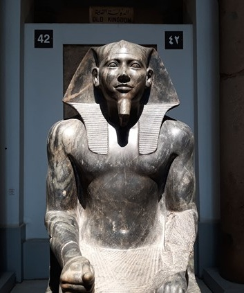
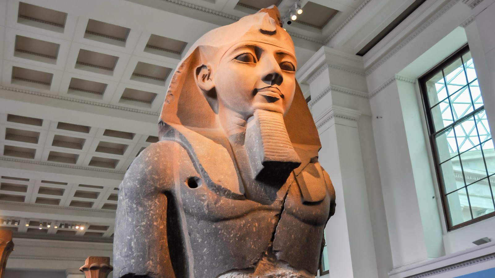
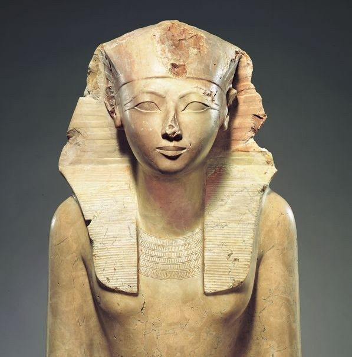
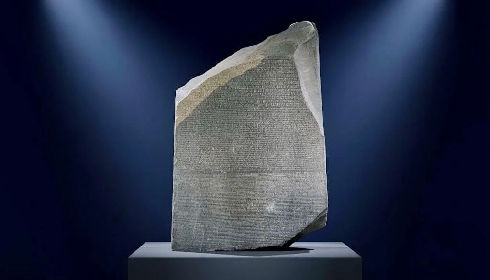
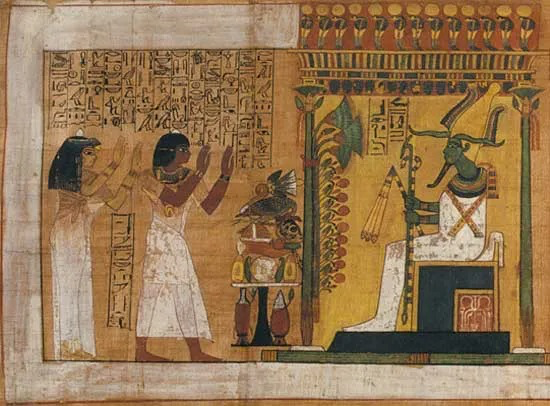

A symbolic Ankh amulet representing life and immortality, widely used in ancient Egyptian belief and burial rituals.
Ankh Amulet

A refined bust of Queen Nefertiti, showcasing elegance, beauty, and the artistic mastery of Amarna-period sculpture.
Bust of Nefertiti

A traditional broad collar necklace made of colorful beads, worn by royalty and elite as a symbol of status and protection.
Broad Collar Necklace

A powerful diorite statue of Pharaoh Khafre seated in a rigid, idealized pose, symbolizing divine kingship from the Old Kingdom.
Khafre Statue

The iconic golden death mask of Tutankhamun, crafted to preserve the pharaoh’s face for eternity in the afterlife.
Golden Death Mask of Tutankhamun

A highly detailed limestone statue of a seated scribe, celebrated for its lifelike expression and realism in Ancient Egyptian art.
Seated Scribe

A colossal representation of Ramesses II, emphasizing his power, authority, and enduring legacy as one of Egypt’s greatest pharaohs.
Ramesses II Statue

A statue of Pharaoh Hatshepsut, one of Egypt’s few female rulers, often depicted with traditional royal regalia to assert her authority.
Hatshepsut Statue

Two massive stone statues representing Pharaoh Amenhotep III, originally guarding his mortuary temple on the west bank of Thebes.
Colossi of Memnon

The Rosetta Stone is a granodiorite slab inscribed with three scripts—Greek, Demotic, and hieroglyphic—which enabled scholars to decode ancient Egyptian writing.
The Rosetta Stone

The Eye of Horus amulet, a powerful symbol of protection, healing, and royal power in ancient Egypt.
Eye of Horus Amulet

The Book of the Dead is a collection of funerary spells and illustrations designed to guide the deceased safely through the afterlife in ancient Egyptian belief.
Book of the Dead

A cartouche pendant inscribed with royal names, believed to protect the wearer by enclosing sacred hieroglyphs.
Cartouche Pendant

Ornate bracelets from Tutankhamun’s tomb, showcasing gold craftsmanship and inlaid stones symbolizing royal wealth and divine protection.
Tutankhamun Bracelets

The Narmer Palette is one of the earliest known historical artifacts, depicting the unification of Upper and Lower Egypt under King Narmer.
Narmer Palette
.jpg)